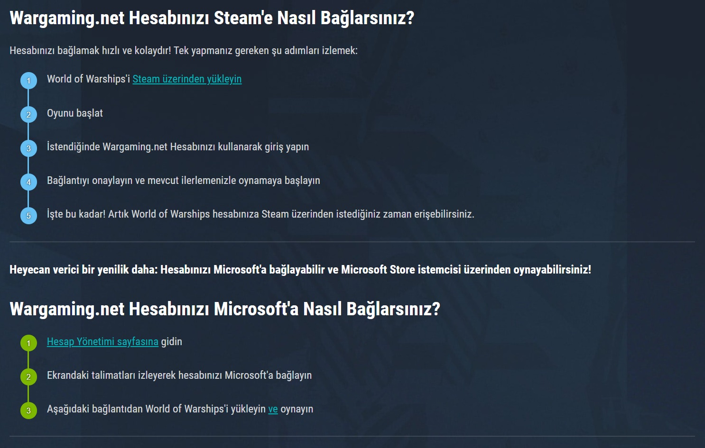

Wargaming Hesabını Steam'e Bağlamak
Wargaming.Net (WG) hesabının Steam'e bağlanması aslında eskiden vardı ama WG, 2020 yılında falan bu özelliği kaldırmıştı. Şimdi ise, 2025 yılı içinde WG hesaplarının tekrar Steam'e bağlanmasına olanak tanıyan yeni bir düzenleme yapıldı.
Aşağıdaki açıklamada bu işlemin nasıl yapılacağı anlatılmış. Ben bu işlemi gösteren bir video hazırladım.
Wargaming'in konuya dair açıklaması:
